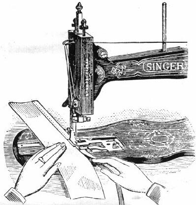
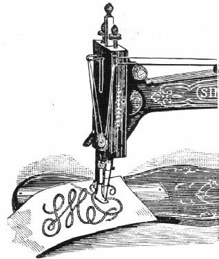
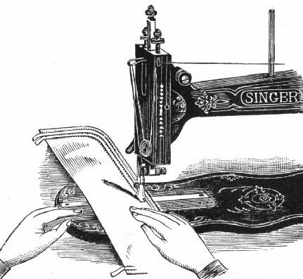

Adjust the binder to the desired width of binding and fix it firmly to the machine with the thumb screw. Place the end of the binding over the feed points, and its edges under the clips, then insert the fabric between the clips, and guide it against the binder.
If the sewing is not on the edge of the binding, loosen the screw and move the binder a little to the right or left until it is in the correct position. The under clip may be adjusted to fold the binding wider on the under than on the upper side of the work.

Attach the braider to the presser bar, pass the braid through the eye at the top of the arm, then take a short piece of thread and pass the ends through the slot in the braider, forming a loop.
Place the end of the braid into the loop, and drawing the thread through the slot, the braid will pass through with it. (Or pass the braid through by pushing the end with the point of a needle.)
Stamp or trace the design on the fabric, and guide it as required.

Attach the corder foot to the presser bar, pass the cord into the eye of the guide, which is held in the left hand between the folds of the fabric with its end opposite the first groove in the foot.
In placing each succeeding cord, guide the fabric with the last cord sewn in the second groove of the foot. In Cording, always turn a square corner while the needle rests in the fabric.
Remove the presser foot, raise the needle bar to its highest point and take out the lower screw of the face plate. Place the attachment on the edge of the face plate nearest you, with the fork of its driving rod under the slack thread pin (13).
Insert the long screw (supplied with the attachment) through the bracket arm into the lower screw hole of the face plate, keeping the attachment close to, and level with, the top of the head, and tighten it securely.
The reel bracket is now hooked around the tension screw, and also screwed to the top of the embroiderer. Attach the embroidering presser foot, turn the balance wheel slowly, and see that the levers pass each other, clearing both the needle and the presser foot.
The reels are kept on the reel pins by an elastic band. Both threads come off on the left side of the reel and pass through the tension springs on the levers. The left cover is threaded at the point from the inside, and the right lever from the outside, that is, towards the needle. The two threads afterwards pass under the presser foot.
Each embroidering thread should pass under the tension spring, so that it is tightly held between the spring and the lever to give a very light tension.
NOTE. When using the Embroidering attachment, the needle thread passes behind the driving rod into the slot of the reel bracket, and then down to the tension discs, etc..